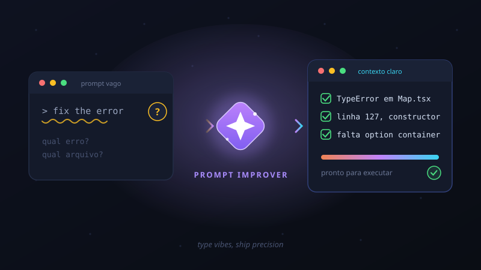

Prompt Improver
Avalia automaticamente a clareza dos seus prompts no Claude Code. Quando um prompt está vago, a skill pesquisa o contexto do projeto e faz de 1 a 6 perguntas estruturadas antes de executar — transformando "vibes" em instruções precisas.

↓ Baixar e instalar
Instalação global (disponível em todos os seus projetos):
git clone https://github.com/severity1/claude-code-prompt-improver.git ~/.claude/skills/prompt-improver
Ou instalação apenas no projeto atual (execute na raiz do projeto):
git clone https://github.com/severity1/claude-code-prompt-improver.git .claude/skills/prompt-improver
~ equivale a %USERPROFILE%
(ex.: C:\Users\seu-usuario\.claude\skills\prompt-improver).
Após instalar, reinicie o Claude Code para a skill ser carregada.
⚙ Funcionalidades
A skill funciona por meio de hooks que interceptam o fluxo do Claude Code em
três momentos: quando você envia um prompt (UserPromptSubmit), antes de
ferramentas serem executadas (PreToolUse) e quando subagentes iniciam
(SubagentStart). Se o prompt é claro, nada muda — ele segue direto.
Se é vago, a skill entra em ação: pesquisa o projeto, reúne contexto e devolve
perguntas objetivas com opções estruturadas (via AskUserQuestion).
Internamente, um motor declarativo em Python aplica 9 "nudges" (orientações contextuais) de forma seletiva:
improve
Verifica a clareza do prompt e só questiona quando ele é genuinamente vago.
approach-assessment
Em tarefas não triviais, sugere a melhor estratégia (subagente vs. orquestração).
workflow
Detecta trabalho multi-etapas e recomenda planejamento antes de começar.
plan-mode
Avalia se a tarefa justifica entrar em modo de plano antes de codificar.
plan
Formata planos de forma legível e testável.
ask-user-question
Roteia decisões que são realmente do usuário para perguntas estruturadas.
output-readability
Em entregas longas, prioriza clareza e legibilidade do resultado.
background-exec
Sugere executar comandos de longa duração em segundo plano.
subagent-routing
Encoraja relatórios concisos em agentes de pesquisa.
★ Dicas
- ⚡Precisa pular a avaliação? Comece o prompt com
*(ex.:* add dark mode) e a skill é ignorada naquela execução. Comandos iniciados com/também passam direto. - 🪙Custo quase zero em prompts claros: a avaliação consome ~189 tokens por prompt; a skill completa só é carregada sob demanda, quando o prompt é vago.
- 🎯Quanto mais contexto, menos perguntas: cite arquivo, linha e comportamento esperado no prompt e a skill nem precisa intervir.
- 🧩Requer Claude Code 2.0.22 ou superior, pois depende da ferramenta
AskUserQuestionpara as perguntas estruturadas. - 🔧Personalizável: os nudges são arquivos JSON (
nudges/*.json) lidos por um motor declarativo — dá para ajustar ou desativar comportamentos individualmente.
▶ Uso na prática
O dia a dia com a skill é transparente: você só percebe que ela existe quando ela evita um retrabalho. Compare:
claude "fix the error" # A skill pesquisa o projeto e pergunta: # "Qual erro você quer corrigir?" # ◉ TypeError em Map.tsx:127 # ◯ Warning de build no webpack # ◯ Outro…
claude "Fix TypeError in src/components/Map.tsx
line 127 where mapboxgl.Map constructor is
missing container option"
# Sem perguntas — processa imediatamente.
E quando você quiser improvisar de propósito, sem interrupções:
claude "* add dark mode" # o * pula a avaliação da skill